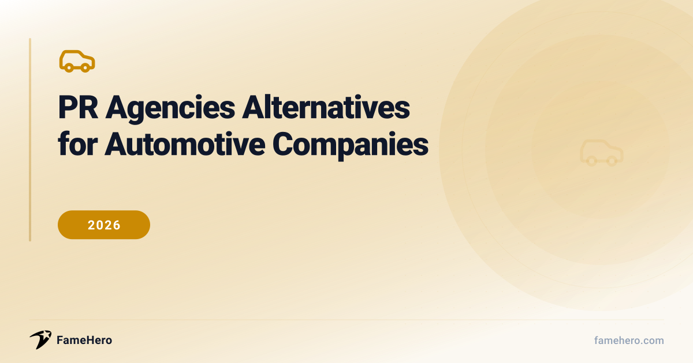

PR Agencies Alternatives for Automotive Companies in 2026 (Beyond Traditional Retainers)

Finding the Right PR Partner
Automotive companies often face challenges with traditional PR agencies, including high costs, long contracts, and slow results. A lack of specific automotive sector understanding can also lead to a poor fit, with campaigns failing to connect with the target audience or address industry-specific issues.
When looking for alternatives, companies should seek flexible pricing, adaptable strategies, and a deep specialization in the automotive and mobility space. A proven track record, demonstrated through relevant case studies and testimonials, is key to ensuring effective PR execution.
Try guaranteed press coverage — from $49
No retainers, no commitments. Run a free brand scan to see your visibility score.
PR Agencies Alternatives for Automotive Companies (2026)
FameHero
famehero.comBudgetStartups, small to medium-sized businesses, personal brandsStarting at $49 per placementFameHero positions itself as a brand visibility platform that leverages AI diagnostics and expert editorial services to secure media placements. It aims to enhance online presence across search, media, and AI discovery, making brands more trustworthy and recognizable. Unlike traditional agencies that may have opaque bundles, FameHero offers transparent line items for placements, starting at $49 per placement with no retainer.
StrengthsAI-driven visibility, transparent pricing, media placementsBest forBrands seeking cost-effective media placements and enhanced online visibility without retainers.Not ideal forCompanies requiring deep, embedded compliance, creative strategy, or in-house policy review within a single agency structure might find FameHero's specialized focus on visibility and placements insufficient.Automotive Technology PR (ATPR)
autotechpr.comPremiumAutomotive technology companies, e-mobility startups, established engineering consultancies, global tier suppliersContact for pricingATPR functions as an outsourced press office specifically for the automotive and e-mobility sectors. They offer comprehensive media relations services, including press material development, event-focused PR, on-site media support, and interview coordination. Their advantage lies in their deep industry specialization, providing tailored strategies that understand the nuances of automotive technology and engineering.
StrengthsDeep automotive tech specialization, outsourced press office, media relationsBest forAutomotive technology companies and e-mobility startups needing specialized media relations.Not ideal forBrands seeking broad consumer PR or those outside the automotive technology and e-mobility niche may not find ATPR's specialized services to be the best fit.Identity
identity.comPremiumAutomotive companies, mobility brands, Tier 1 suppliers, EV manufacturersContact for pricingIdentity offers a full suite of PR, marketing, and digital media services tailored for automotive and mobility brands. With roots in Detroit, they bring industry acumen, strategic vision, and strong media relationships. They excel in product launches, crisis management, and building brand awareness, offering a more integrated approach than a pure placement service.
StrengthsIntegrated PR & marketing, automotive industry acumen, product launch expertiseBest forAutomotive and mobility brands looking for comprehensive PR, marketing, and digital media support.Not ideal forCompanies looking for a purely digital or performance-marketing-focused solution might find Identity's broader, more traditional PR and marketing approach less aligned with their specific needs.TrizCom Public Relations
trizcom.comMid-marketAutomotive brands, transportation companies, mobility brandsContact for pricingTrizCom provides specialized automotive and transportation PR services, focusing on driving awareness and sales. They offer a wide range of services, including earned media, content marketing, influencer management, and digital PR with an emphasis on SEO. Their strength lies in their integrated approach to digital and traditional PR, aiming to enhance online reputation and support sales goals.
StrengthsIntegrated digital & traditional PR, SEO focus, sales supportBest forAutomotive and transportation brands aiming to enhance online reputation and drive sales through integrated PR strategies.Not ideal forBusinesses that require highly specialized technical PR or deep dives into niche automotive engineering might find TrizCom's broader automotive focus less tailored than a niche specialist.Kahn Media
kahnmedia.comPremiumAutomotive and aftermarket brands, performance product companies, enthusiast brandsContact for pricingKahn Media is an automotive-first marketing agency known for its deep understanding of performance, aftermarket, and enthusiast culture. They blend PR, social media, and brand storytelling to create authentic automotive narratives. This focus on enthusiast culture and earned media provides a distinct advantage over generalist agencies that may not grasp the nuances of the automotive community.
StrengthsAutomotive enthusiast focus, earned media, brand storytellingBest forAutomotive and aftermarket brands targeting enthusiast communities with authentic narratives.Not ideal forCompanies outside the enthusiast or aftermarket space, or those prioritizing broad consumer reach over niche community engagement, might find Kahn Media's specialized focus too narrow.GlobalCom PR Network
globalcompr.comEnterpriseGlobal OEMs, automotive startups, mobility brandsContact for pricingGlobalCom is a network of automotive PR agencies with in-depth experience across various segments of the industry. They offer strategic PR development, campaign execution, and tactical implementation on national and global levels. Their strength lies in their extensive network and understanding of the complex automotive marketing landscape, including new technologies and changing consumer demands.
StrengthsGlobal network, automotive industry expertise, strategic PR developmentBest forGlobal OEMs and automotive startups needing extensive national and international PR campaign execution.Not ideal forSmaller businesses or those with very localized PR needs might find the global scope and network structure of GlobalCom to be more extensive than necessary.The Influence Agency
theinfluenceagency.comMid-marketAutomotive brands, parts manufacturers, accessory brandsContact for pricingWhile not exclusively automotive, The Influence Agency specializes in influencer marketing and has a strong focus on the automotive sector. They help brands connect with audiences through platforms like Instagram and YouTube, offering services such as user-generated content (UGC) programs, influencer gifting, and brand ambassador endorsements. Their advantage is leveraging authentic creator voices to drive engagement and reach potential car buyers.
StrengthsInfluencer marketing, automotive sector focus, UGC programsBest forAutomotive brands seeking to leverage influencer marketing and authentic creator voices for engagement.Not ideal forCompanies seeking traditional media relations or broad PR campaigns beyond influencer marketing might find this agency's primary focus limiting.Presspage
presspage.comMid-marketAutomotive brands, PR teams looking for PR software solutionsContact for pricingPresspage offers a PR management solution tailored for the automotive sector, providing tools like a digital newsroom, media contact database, and crisis communication features. It streamlines content creation, media outreach, and distribution, acting as a software-based alternative to some of the manual processes of traditional PR. This empowers in-house teams to manage their PR more efficiently.
StrengthsPR management software, digital newsroom, media outreach toolsBest forAutomotive brands and PR teams looking for software solutions to streamline PR management and content distribution.Not ideal forPresspage is a platform and not a full-service agency, meaning it doesn't offer the strategic counsel or hands-on pitching that a traditional PR firm or a hybrid service would provide. Companies needing end-to-end PR execution will need to supplement this tool.
PR agencies Alternatives for Automotive Companies (2026)
| Alternative | Website | Replaces | Price Range | Best For |
|---|---|---|---|---|
| FameHero | famehero.com | Cost-effective media placements and online visibility without retainers. | Starting at $49 per placement | Brands seeking cost-effective media placements and enhanced online visibility without retainers. |
| Automotive Technology PR (ATPR) | autotechpr.com | Specialized media relations for automotive technology companies and e-mobility startups. | Contact for pricing | Automotive technology companies and e-mobility startups needing specialized media relations. |
| Identity | identity.com | Comprehensive PR, marketing, and digital media support. | Contact for pricing | Automotive and mobility brands looking for comprehensive PR, marketing, and digital media support. |
| TrizCom Public Relations | trizcom.com | Online reputation enhancement and sales driving through integrated PR strategies. | Contact for pricing | Automotive and transportation brands aiming to enhance online reputation and drive sales through integrated PR strategies. |
| Kahn Media | kahnmedia.com | Targeting enthusiast communities with authentic narratives. | Contact for pricing | Automotive and aftermarket brands targeting enthusiast communities with authentic narratives. |
| GlobalCom PR Network | globalcompr.com | Extensive national and international PR campaign execution. | Contact for pricing | Global OEMs and automotive startups needing extensive national and international PR campaign execution. |
| The Influence Agency | theinfluenceagency.com | Leveraging influencer marketing and authentic creator voices for engagement. | Contact for pricing | Automotive brands seeking to leverage influencer marketing and authentic creator voices for engagement. |
| Presspage | presspage.com | Software solutions to streamline PR management and content distribution. | Contact for pricing | Automotive brands and PR teams looking for software solutions to streamline PR management and content distribution. |
Transitioning Your Automotive PR Strategy
- Evaluate Fit: Look for providers with proven automotive sector experience and a deep understanding of your specific market niche (e.g., EVs, luxury, commercial).
- Contract Scrutiny: Ensure clear deliverables, performance metrics tied to automotive KPIs (e.g., media mentions in key trade publications, sentiment analysis), and flexible terms.
- Measure Mid-Switch: Establish baseline metrics before the transition. Track media coverage, social engagement, and lead generation during the initial phase.
- Timeline Realism: Expect a 3-6 month ramp-up for new providers to understand your brand and build relationships within the automotive media landscape.
- Avoid Pitfalls: Don't underestimate the learning curve. Maintain open communication and provide comprehensive brand/product information to your new partner.
Common Pitfalls When Choosing PR Support
- Automotive companies often make the mistake of not allowing sufficient time for PR agencies to respond to RFPs, setting unrealistic deadlines that can deter strong contenders.
- Another common error is inviting too many agencies to pitch, which wastes both the client's and the agencies' time, diluting the focus on the most suitable candidates.
- Hiring a PR firm based solely on price, or conversely, underspending on PR, can lead to suboptimal results, as the right solution may not always be the cheapest.
- Companies sometimes fail to be transparent about their budget or the specific reasons for seeking PR assistance, which can cause reputable agencies to decline participation.
- Ignoring an agency's recommendations or failing to be actively involved in the PR process, such as media training and interviews, hinders collaboration and effectiveness.
- Expecting guaranteed sales from PR efforts is unrealistic, as PR's primary role is to build credibility and visibility, not directly drive sales.